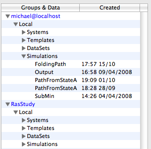

Adun Data Types
Like other programs Adun has specific data that it creates and works on - these data-types are analagous to Word .doc files or Keynote presentations. Adun's four data-types are called Systems, Simulations, Templates and Data Sets.
When you work with Adun you constantly create new instances of these data-types, for example new simulations. Adun stores all the data it creates in databases which are browsable via the database browser as shown in the figure below. As you can see it stores the same types of data together in one 'folder'.

Each data type is described in more detail on its own page - just follow the links below to learn more.
See also
Systems
Templates
Simulations
Data Sets
Data Management Topics